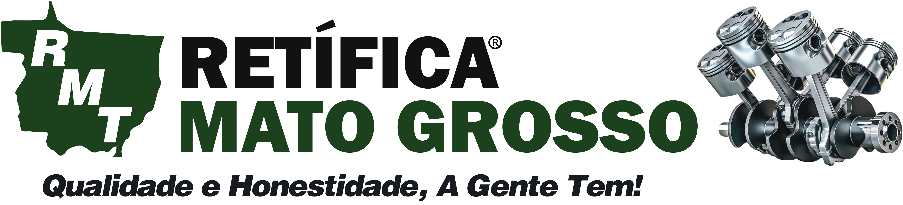
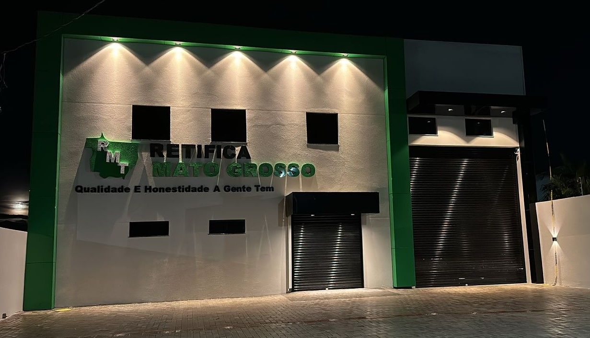

Especialistas em retífica de motores do leve ao pesado. Atendemos mecânicas e fazendas em toda a região. Nós buscamos seu motor e garantimos a assistência!
A Retífica Mato Grosso nasceu em Sinop no ano de 2014. Caminhando para 12 anos de mercado, construímos nossa reputação com base em muito trabalho duro, qualidade técnica e, acima de tudo, honestidade com nossos clientes.
Sabemos que máquina parada é prejuízo, principalmente para o homem do campo e para as oficinas parceiras. Por isso, oferecemos um serviço completo de retífica, cuidando de cada detalhe com precisão milimétrica para devolver o desempenho original do seu maquinário.
Fale com nossos especialistas
Soluções completas e peças de alta qualidade para o coração do seu veículo.
Reconstrução completa de motores da linha leve (carros, caminhonetes) à linha pesada (caminhões e tratores agrícolas).
Solicitar OrçamentoUsinagem, troca de guias, sedes, retentores e testes de trinca para garantir a vedação e compressão perfeita do seu motor.
Solicitar OrçamentoRetífica e polimento de virabrequim com medidas exatas, garantindo o funcionamento suave e sem desgaste prematuro das bronzinas.
Solicitar OrçamentoFornecemos peças para retífica das melhores marcas do mercado, garantindo durabilidade e eficiência para o serviço prestado.
Cotar PeçasSabemos da dificuldade de transportar motores pesados. Por isso, a Retífica Mato Grosso busca o seu motor na sua fazenda, garagem ou mecânica e oferece toda a assistência necessária após o serviço.
Agendar Coleta de Motor